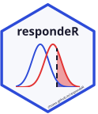

Per-study responder risk differences
Source:R/responder-rd.R
responder_rd_individual.RdDichotomises each study at the MID threshold and returns the per-study
responder risk difference (experimental minus control) with a confidence
interval. Building block for the "individual" method of
responder_analysis(); also feeds the forest plot and per-study table.
Arguments
- data
A data frame with one row per study and columns
study,change_e,sd_e,n_e,change_c,sd_c,n_c. See sample_responder_data.- mid
Single finite number: the minimal important difference threshold.
- direction
"higher"(a larger change indicates response) or"lower".- se_method
SE model for
"individual":"binomial"(default) or"delta".- conf_level
Confidence level (default
0.95).- dist
Change-score distribution:
"normal"(default),"lognormal"or"t".- df
Degrees of freedom when
dist = "t".- mid_sd
Optional standard deviation of the MID threshold; when
> 0its uncertainty is propagated into the effect-measure variances.
Value
A data frame with one row per study and columns study, p_e,
p_c, rd, se, ci_lb, ci_ub (proportion scale).
Examples
responder_rd_individual(sample_responder_data, mid = 1)
#> study p_e p_c rd se ci_lb ci_ub
#> 1 Study 1 0.4867232 0.2564577 0.2302655 0.10023645 0.03380566 0.4267253
#> 2 Study 2 0.4355507 0.2259278 0.2096229 0.05454152 0.10272350 0.3165223
#> 3 Study 3 0.5068639 0.2047187 0.3021452 0.05106129 0.20206690 0.4022235